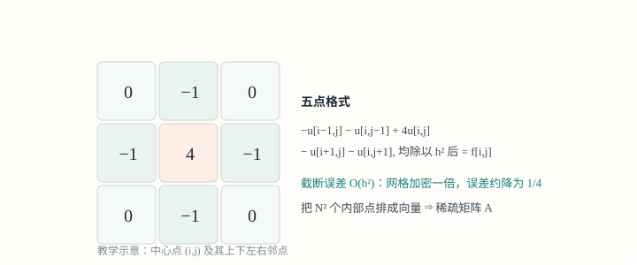
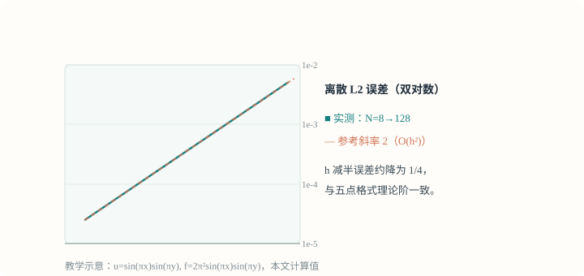

CHAPTER 28 · NUMERICAL ANALYSIS
综合实战：从算法到代码
前面 27 章各讲一块。这一章把它们装进同一个项目：用五点差分把二维 Poisson 方程离散成稀疏线性系统，用直接法/迭代法求解，再用已知精确解验证 O(h²) 的收敛阶。离散化、线性代数、迭代法与误差分析在这里第一次同时出现。
01 · 项目目标
输入：源函数 f(x,y)、单位正方形 Ω=(0,1)²、边界值（这里取齐次 Dirichlet u=0）、网格数 N。输出：内部格点上的数值解 uₕ。假设：f 足够光滑；解存在且唯一；网格均匀、步长 h=1/(N+1)。
Poisson 方程是偏微分方程数值解的入门模型，却覆盖了静电势、稳态热传导、薄膜形变等众多场景。它之所以适合收尾，是因为一个项目同时用到本课的多条主线：
| 环节 | 用到的章节 | 关键问题 |
|---|---|---|
| 离散化 | 差分/误差分析 | 截断误差阶 |
| 稀疏矩阵组装 | 15–16 | 如何不存稠密矩阵 |
| 线性求解 | 直接法与 18–19 迭代法 | 复杂度与收敛速度 |
| 条件数与预处理 | 17 / 19 | 为何网格加密后变慢 |
| 误差验证 | 2 | 观测阶是否达理论阶 |
02 · 五点差分与稀疏矩阵
在内部格点用二阶中心差分近似二阶导，就得到五点格式（图 1）：
它的截断误差是 O(h²)（可从两个方向的一维中心差分直接相加得到）。把 N² 个内部未知量按行优先排成一个向量，五点耦合就成为一个 N²×N² 的稀疏块三对角矩阵：

−1，四角为 0；除以 h² 后近似 −∇²。截断误差 O(h²)：网格加密一倍，误差约降为 1/4。03 · 求解策略
得到 Au=f 后，四种策略的取舍本质是复杂度与条件数的权衡。Poisson 矩阵对称正定，条件数随网格加密而恶化：
| 方法 | 迭代次数 / 代价 | 总复杂度 | 适用 |
|---|---|---|---|
| 稀疏直接法（LU/Cholesky） | 一次分解，无迭代 | O(N³) 时间 | 中小规模、需高可靠性 |
| Jacobi | 迭代次数 O(κ)=O(N²) | 极慢 | 仅教学 |
| 共轭梯度（CG） | 迭代次数 O(√κ)=O(N) | O(N³) | 对称正定、中大规模 |
| 预处理 CG（SSOR） | 迭代次数 O(√N) | 更低 | 大规模 |
| 多重网格（MG） | 迭代次数 O(1) | O(n)=O(N²) | 超大网格（理想） |
为直观起见，用纯 Python 求解 f≡1 的问题（容差 10⁻⁸），实测迭代次数如下——CG 约随 N 线性增长，正好对应 O(√κ)=O(N)；而 Jacobi 呈 O(N²)，很快就不可接受。这正是第 18–19 章谱半径/条件数分析的直接后果。
| 方法 | N=16 | N=32 | N=64 |
|---|---|---|---|
Jacobi（容差 10⁻⁶） | 约 423 次 | 约 1305 次 | — |
CG（容差 10⁻⁸） | 28 次 | 59 次 | 119 次 |
04 · 验证与收敛阶
选一个能算出解析解的问题来测阶：u=sin(πx)sin(πy)，对应 f=2π²·u（且天然满足齐次 Dirichlet）。用离散 L² 误差衡量：
选择网格数 N，观察离散误差与实测收敛阶（用本文纯 Python 的 CG 结果）：
若误差 ≈Chᵖ，则在双对数坐标上斜率为 p。数值解与精确解之差已含离散误差（与求解器误差相比占主导），实测阶数逐次趋近 2：
import math
def apply_A(x, N, h2):
"""五点差分矩阵（含 1/h^2）乘向量 x，内部 N x N、零 Dirichlet"""
y = [0.0] * (N*N)
for i in range(N):
for j in range(N):
k = i*N + j; s = 4.0 * x[k]
if i > 0: s -= x[k-N]
if i < N-1: s -= x[k+N]
if j > 0: s -= x[k-1]
if j < N-1: s -= x[k+1]
y[k] = s / h2
return y
def cg(N, b, tol=1e-12):
h2 = 1.0/((N+1)**2); n = N*N
x = [0.0]*n; r = b[:]; p = r[:]; rs = sum(v*v for v in r); b0 = math.sqrt(rs)
for k in range(1, 20000):
Ap = apply_A(p, N, h2)
alpha = rs / sum(p[i]*Ap[i] for i in range(n))
for i in range(n):
x[i] += alpha*p[i]; r[i] -= alpha*Ap[i]
rsn = sum(v*v for v in r)
if math.sqrt(rsn) < tol*b0: return x, k
beta = rsn/rs; rs = rsn
for i in range(n): p[i] = r[i] + beta*p[i]
raise RuntimeError("CG 未收敛")
def exact_and_rhs(N):
h = 1.0/(N+1); ue = [0.0]*(N*N); f = [0.0]*(N*N)
for i in range(N):
for j in range(N):
s = math.sin(math.pi*(i+1)*h) * math.sin(math.pi*(j+1)*h)
ue[i*N+j] = s; f[i*N+j] = 2*math.pi**2 * s
return ue, f
prev = None
for N in [8, 16, 32, 64, 128]:
h = 1.0/(N+1)
ue, f = exact_and_rhs(N)
u, _ = cg(N, f)
err = h * math.sqrt(sum((u[i]-ue[i])**2 for i in range(N*N)))
order = "" if prev is None else f" order≈{math.log(prev/err)/math.log(2):.2f}"
print(f"N={N:3d} h={h:.4f} err={err:.3e}{order}")
prev = err
h 的下降（双对数）。N=8,16,32,64,128 对应误差 5.11e−3, 1.43e−3, 3.78e−4, 9.73e−5, 2.47e−5，参考虚线斜率为 2；逐次实测阶数 1.84→1.92→1.96→1.98 趋近理论值 2。数据为本文纯 Python 计算结果。05 · 失败边界
| 场景 | 原因 | 表现 | 对策 |
|---|---|---|---|
| 用稠密矩阵 | 未知量 N² 增长快 | 内存爆炸 | 用 CSR 稀疏格式 |
| 收敛阶不达 2 | 边界/精确解写错、索引差一 | 观测阶 ≈1 或更低 | 先用已知解逐步验证 |
| 迭代不收敛 | 未预处理、矩阵病态 | CG 迭代次数飙升 | 预处理（SSOR/IC/AMG） |
| 解出现振荡 | 中心差分对对流占优问题不适用 | 非物理振荡 | 改用迎风格式（本课未展开） |
“看似正确”最危险：一个写错了索引的组装器仍然会给出光滑、对称、量级合理的解，只是收敛阶不对。唯一可靠的判据是能测出正确的收敛阶，而不是“图看着顺眼”。
06 · 课程总结
28 章的主线可以压成一张表——它们最终都汇入同一个信念：永远不要盲目相信一个数值结果。
| 篇 | 章节 | 核心技能 | 一句话 |
|---|---|---|---|
| 基础 | 1–2 | 误差与稳定性 | 近似有代价，理解代价才能控制误差 |
| 逼近 | 3–9 | 插值、逼近、拟合 | 用简单函数近似复杂世界 |
| 积分 | 10–14 | 数值积分与微分 | 计算机不会积分，但它会求和 |
| 线代 | 15–19 | 方程组与迭代法 | 从直接到迭代，从精确到高效 |
| 非线性 | 20–22 | 方程（组）求根 | 没有解析解，就迭代逼近 |
| 特征值 | 23–24 | 幂法、QR | 分解是线代的精髓 |
| 微分方程 | 25–27 | ODE、刚性 | 方法选对，效率提升千万倍 |
| 实战 | 28 | Poisson 求解器 | 从算法到代码，从理论到实践 |
比知识点更重要的是贯穿全程的思维习惯：检查误差、验证收敛、弄清算法在什么条件下会失效。只要还在用有限精度的计算机模拟连续世界，这份敏感就不会过时。
原始资料与延伸阅读
本章将已知结论与本文独立构造的数值示例区分开：五点格式的 O(h²) 精度、条件数 κ(A)=O(1/h²)、CG 迭代次数 O(√κ)、多重网格 O(1) 迭代均为理论结果；图 1、图 2、实测迭代次数与误差均为本文纯 Python 计算值或教学演示（已简化）。
- SciPy · scipy.sparse.linalg.spsolve：稀疏直接求解（LU）与稀疏矩阵格式。
- SciPy · scipy.sparse.linalg.cg：共轭梯度法与
M预处理接口。 - Y. Saad, Iterative Methods for Sparse Linear Systems, SIAM, 2nd ed., 2003。CG、预处理与多重网格的收敛理论。